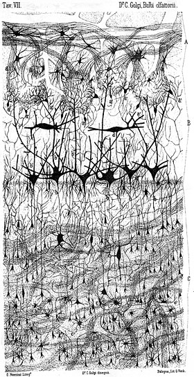

News Archives : 2007 : Gaining Strength From Inactivity
by Venkatesh Murthy, Gabor Petzold and William Tyler
August 30, 2007
Perhaps you have had the experience of walking into a new environment, such as a Moroccan bazaar or a Chinese supermarket for the first time, and being struck by the strength of novel odors in that environment. Odors present in familiar environments such as your own home barely register in your consciousness. Why is this so? The general explanation for these sorts of phenomena is that one or more parts of your brain has adapted to the persistent stimulus, which no longer evokes strong sensation or perception. Our recent experiments, published in the Journal of Neuroscience, suggest that part of this adaptation may occur in one of the first steps in the olfactory pathway, right behind your nose. This is a surprising finding because it is generally thought that peripheral circuits are hard-wired and higher brain regions such as the cerebral cortex are the ones that are malleable.
In the olfactory system, odorants bind to receptors in neurons located in the nose and induce electrical signals that are conveyed to the olfactory bulb through the axons of sensory neurons. Within the olfactory bulb, these axons projecting from the nose make synapses onto second-order neurons within structures called glomeruli. Each glomerulus is thought to receive input from a large number of sensory neurons expressing only one type of receptor (out of about 1200 receptors in rats). Such a massive convergence is thought to help reduce noise, extend the dynamic range of odor sensing and also allow for a more organized representation or map of odor information.
The passage of information from the sensory axons to the downstream circuits is governed, in part, by the strength of the synapses made by these axons. We asked whether the strength of this synapse can be modulated by odor experience. In the normal course of their life, rats encounter a myriad of odorants that are conveyed to the nose by breathing or sniffing. We deprived newborn or adolescent rats of odors in their natural environment by surgically occluding one nostril. We found that synapses made by sensory axons in the deprived side were stronger than those in the normal side or in control non-occluded rats. This increase in synaptic strength was caused by greater efficacy of neurotransmitter release, as well as by larger number of neurotransmitter receptors. We also determined some of the molecular mechanisms underlying these changes. The increase in synaptic strength is not predicted by the well-studied Hebbian model of synaptic plasticity, in which reduced activity would lead to weakening of synapses. Rather, lack of odor-driven activity actually strengthened synapses, a result that is better explained by a different model of plasticity called synaptic homeostasis.
Going back to the situation of novel odorants eliciting stronger sensation, our results suggest that one reason for the phenomenon could be stronger synaptic connections made by sensory axons. This sort of synaptic gain control will cause novel odors to be conveyed more robustly to downstream neural circuits because the corresponding synapses are stronger, and eventually might result in a stronger conscious perception of these odors. Conversely, more common odors will elicit weaker responses. We are eager to test this prediction in future experiments.
For Harvard Community: full text of article in Journal of Neuroscience

An early drawing of the circuitry of the olfactory bulb by Camillo Golgi, who invented the extraordinary method of sparsely labeling neurons to help trace their morphology and connectivity. The synapse studied by Tyler et al is near the top of the image, where axonal bundles can be seen to converge on spherical structures. |